OLD (original) — TC
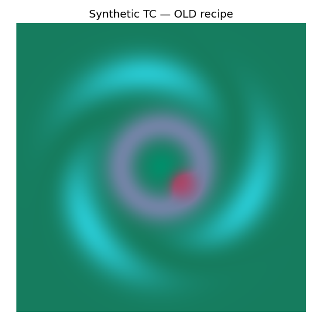
CANON (NRL/GeoIPS ★) is now live in microwave_api.py — the authoritative operational recipe, adopted verbatim. Synthetic scene & color-space sweep (no real overpass yet).

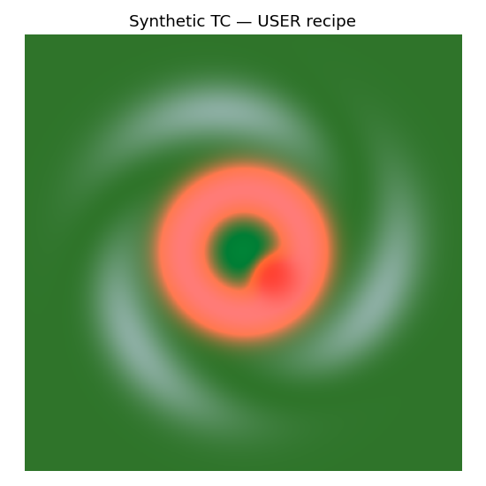
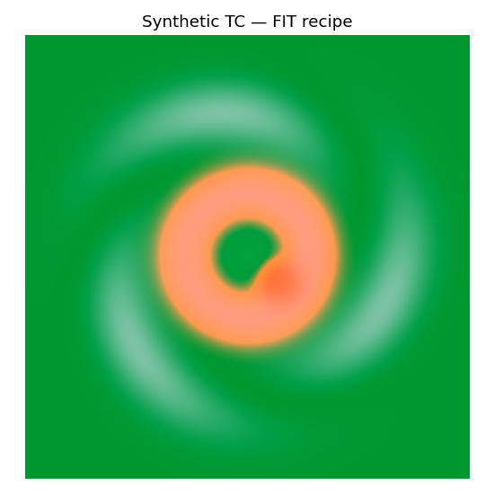
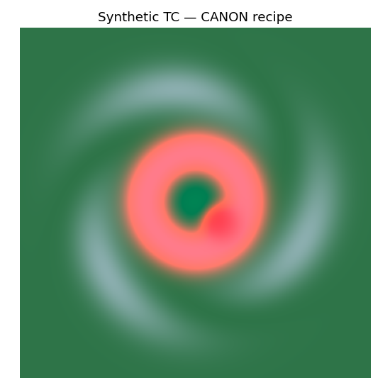
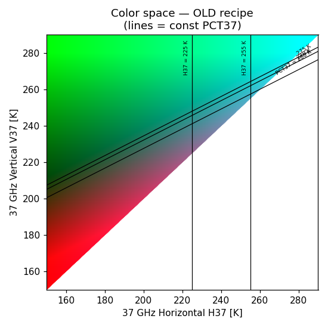
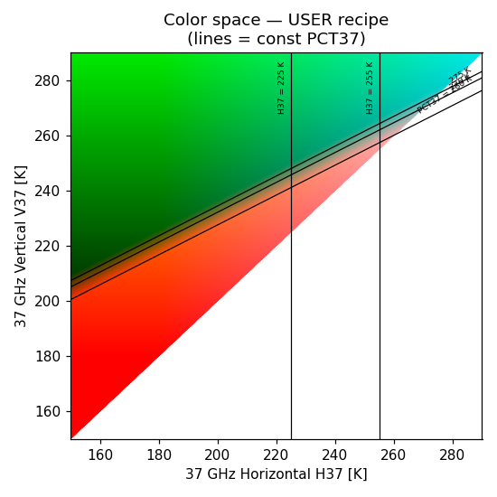
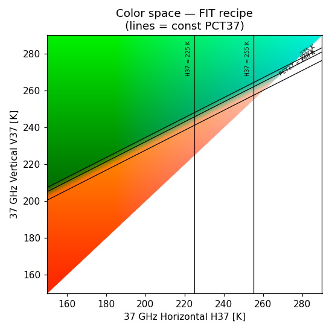
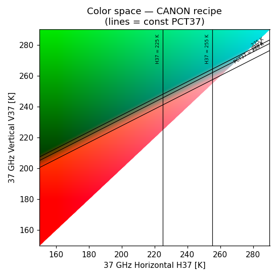
What's live: the authoritative NRL/GeoIPS 37color recipe (linear guns, no gamma):
R = clamp((280 − PCT37) / 20) · G = clamp((V37 − 180) / 120) · B = clamp((H37 − 160) / 140) [ PCT37 = 2.181·V37 − 1.181·H37 ]
Color progression: green ocean → cyan warm rain → pink/magenta deep convection → red intense ice. The pink convective signature is the iconic NRL look (Kieper & Jiang pre-RI "pink ring") — produced by the 160 K blue onset keeping blue present in the convective wedge (R+B = pink).
The key finding: pink (operational) vs salmon (paper Fig. 1)
We first reverse-engineered the recipe by least-squares fitting to the pixels of Jiang 2018 Fig. 1 (the FIT column — salmon convection, err 32.9). When the real GeoIPS source recipe surfaced, it rendered convection pink/magenta instead. Painting each recipe back onto the figure's data points shows the disagreement is entirely the convective wedge — green and cyan agree:
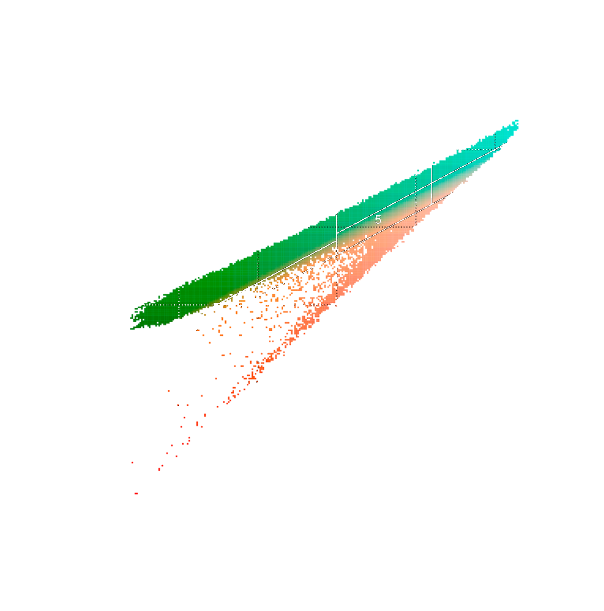
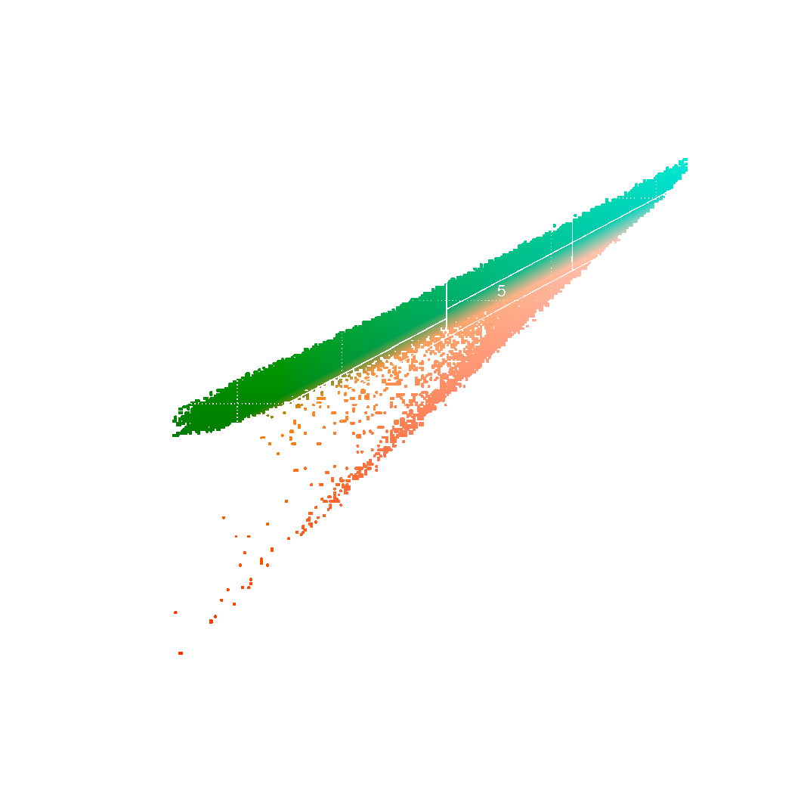
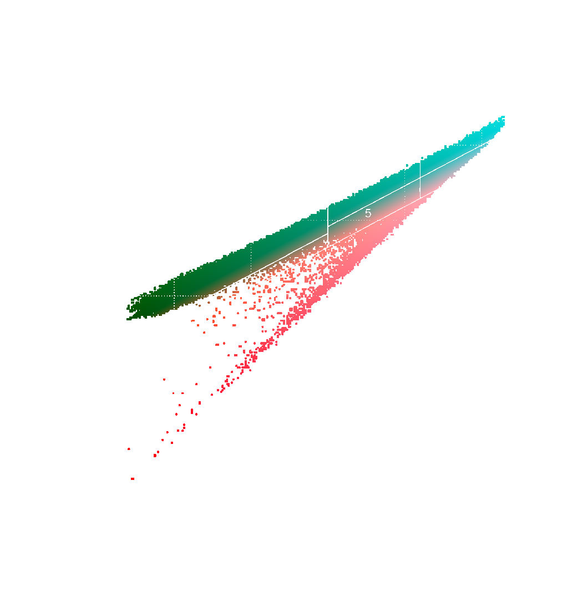
So the pixel-error metric favors the salmon fit — but that's misleading: Fig. 1 is not the operational product. The original goal was to match "other sources" (real NRL imagery), which show pink. The paper even calls the signature "pink" in its text. We therefore ship the operational CANON recipe, not the figure fit.
| recipe | convective hue | err vs Fig.1 | note |
|---|---|---|---|
| CANON ★ | pink/magenta | 60.2 | live — matches operational NRL |
| FIT | salmon | 32.9 | fit to Fig.1 pixels (superseded) |
| USER | pink-ish | 57.8 | paper-pinned; close sibling of CANON |
| OLD | washed teal | 105.0 | original artifact |
Appendix — transition-band extraction fix (from the Fig. 1 fitting work)
While fitting to Fig. 1 we found the pixel extraction had silently dropped the pale salmon↔cyan
transition colors: a blend of near-opposite hues is low-saturation, so the max−min>55 filter
discarded it along with the white background. Recovering those ~4.5k pixels (mn<232 & sat≥18)
closed the white gap through the middle of the arrowhead. (This refined the salmon FIT; the live CANON recipe comes
from the GeoIPS source, not the fit.)
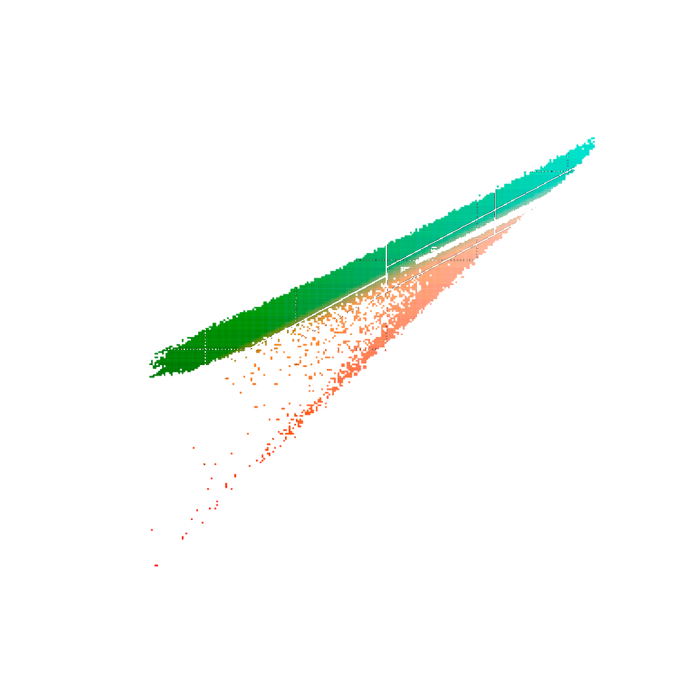
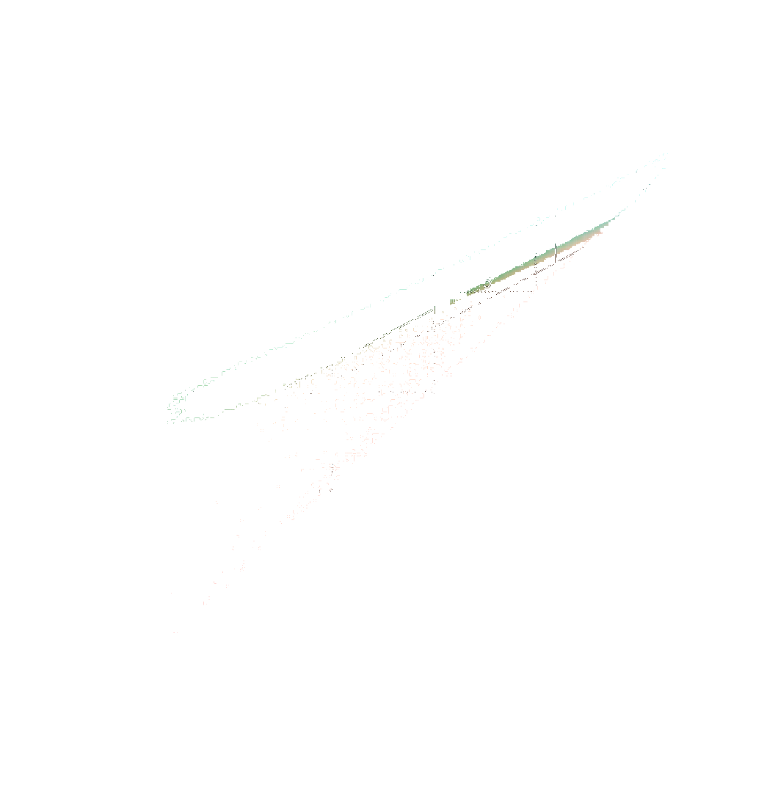